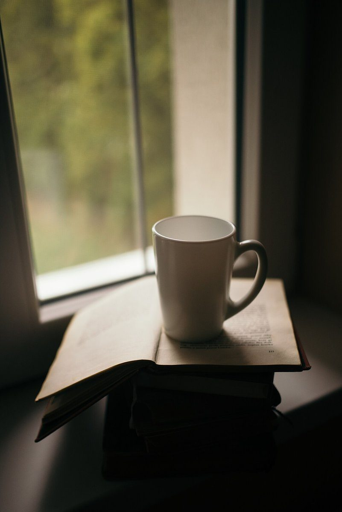

2
Chapter 2
店のこと
お店について確認できているのは、所在地・電話番号・Instagramのアカウントです。
このページの「想像してみる」部分は、制作側が想像して書いたものです。お店の実際の様子・考え・メニューとは関係がありません。
確認できていること
- 店名は「Cafe Bal Chapter」、業種はカフェ
- 所在地は石川県加賀市山中温泉東町２丁目ツ−６(〒922-0114)
- 電話番号は070-2285-7890
- Instagramのアカウントは @chapter_cafe.bal
- 営業時間・定休日・メニュー・価格・ご予約・駐車場は準備中

想像してみる
「Chapter」という名前から
由来は分かりません。制作側は、本の一章のように、ひとつずつページをめくる感覚で知っていけるお店かもしれない、と想像しました。実際のお店の姿や提供内容ではなく、あくまで制作側の連想です。

写真の本とコーヒーは、章というテーマに合わせて選んだフリー素材のイメージです。お店のメニューや店内ではありません。